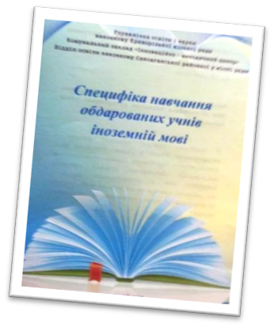

Feedback
-097-36-45-724
Website to learn English

-097-36-45-724

Участь у Міжнародній науково-практичній конференції «Сучасні наукові дослідження представників філологічних наук та їх вплив на розвиток мови та літератури», м. Львів, 10-11 квітня 2015 р.,
Алєксєєва Н.В., Застосування перекладацьких трансформації в процесі перекладу герундія та герундіальних конструкцій / Н.В. Алєксєєва // Матеріали міжнародної науково-практичної конференції у 2х частинах.-ГО «Науково-філологічна організація ЛОГОС»; 2015.- ч.І - с.66-77
У березні 2016 року провела міжнародну відеоконференцію для старших учнів школи з теми “ Our Surroundings” у рамках міжнародного проекту “Face to Faith” за участю шкіл Італії, Новозеландії та Вінницької гімназії.
Виступ на Всеукраїнській науково-практичній конференції «Іноземні мови ХХІ сторіччя: професійні комунікації та діалог культур», 03.11.2016, стаття «Як успішно написати речення англійською мовою» Статтю подано до друку у збірник наукових праць.
Випустила “Great Britain” - методичні рекомендації до вивчення навчальної дисципліни «Іноземна мова (англійська)» та спецкурсу «Країнознавство».
Провела на базі КСШ №107 районний майстер-клас для вчителів англійської мови, які викладають у початковій школі, на тему: «Новий стандарт, нова програма, новий підхід до викладання іноземної мови», 15.05.2013р.
Провела на базі КСШ №107 районний майстер-клас для вчителів англійської мови на тему «Діагностика і оцінка освітніх результатів учнів в умовах Держстандарту», 16.04.2014р.
Підготувала методичний посібник для вчителів іноземних мов «Специфіка навчання обдарованих учнів іноземній мові», 2013 р.
2014-2015 н.р. – Роденко І.М. (Ільїна І.М.)
2015-2016 н.р. – Руда О.Ю.
2016-2017 н.р. – Андрєєва Г.В.
У 2012-2013 н.р. та 2013-2014 н.р. була заступником директора з навчально-виховної роботи.
У 2015-2016 н.р. – керівник ШМК кафедри іноземних мов.
Постійний член журі районних та міських олімпіад, міських та районних конкурсів “Cвіт без кордонів”, у міському турі англомовної ігри “Дебати“